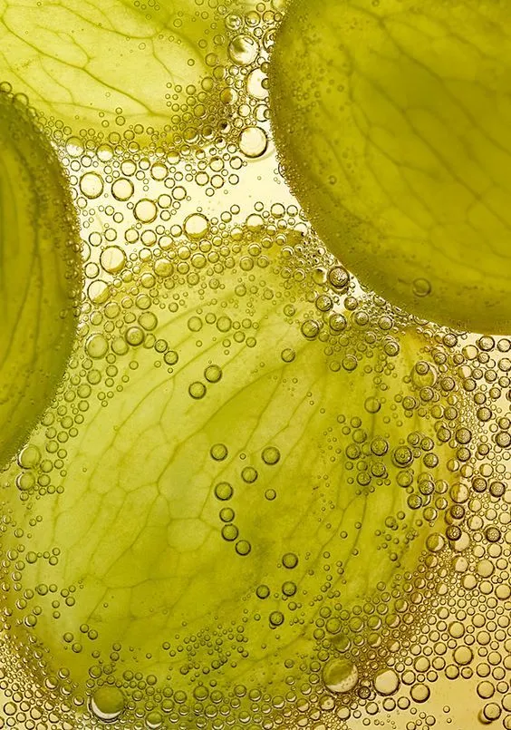
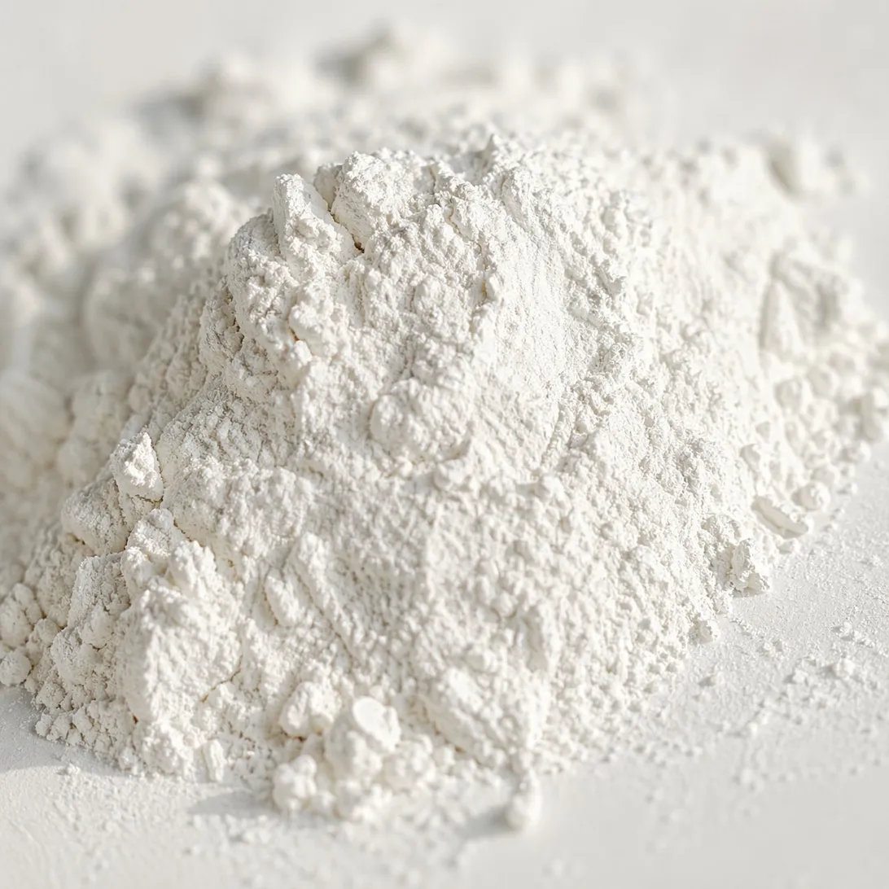
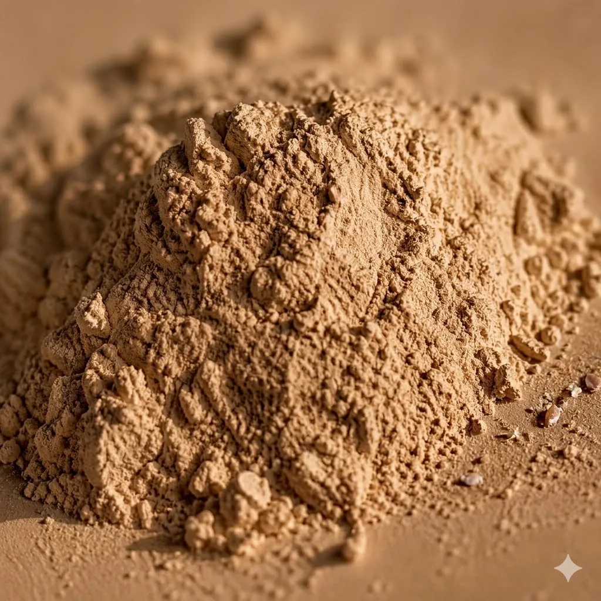
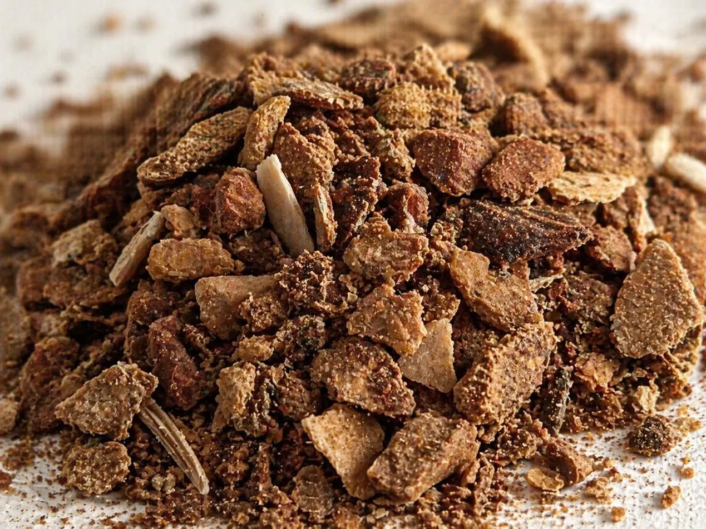
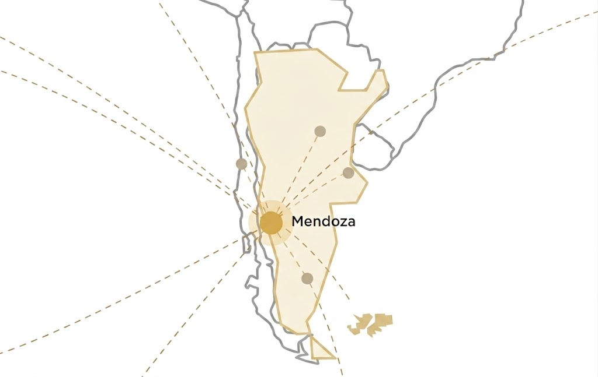

Insumos Vitivinícolas · Mendoza, Argentina
Somos especialistas en la producción y comercialización de mosto de uva blanca, cremor tártaro y bitartrato de potasio — insumos esenciales para la industria alimentaria y vitivinícola. Atención directa y producto de origen natural.
Catálogo de productos
Sobre METS
METS nació con el propósito de abastecer a productores y la industria alimentaria con mosto de uva de alta calidad. Con base en Mendoza — la región productora de mosto más importante de Argentina — conocemos de cerca las necesidades del sector y ofrecemos soluciones concretas.
Nos especializamos en la producción y comercialización de mosto de uva blanca en sus distintas presentaciones: concentrado, sulfitado, orgánico, kosher, single strength y más. Complementamos nuestra oferta con cremor tártaro y bitartrato de potasio, derivados naturales del proceso de elaboración del mosto.
Nuestros productos
Desde mosto de uva blanca en múltiples presentaciones hasta derivados tartáricos naturales, cubrimos las necesidades de la industria alimentaria, bodegas y exportadores.

Producto principalEl mosto de uva blanca es nuestro producto principal. Obtenido de uvas blancas de las mejores zonas vitivinícolas de Mendoza, lo procesamos y comercializamos en diversas presentaciones para satisfacer los requerimientos de la industria alimentaria local e internacional. Es utilizado en la elaboración de jugos, bebidas, golosinas, mermeladas, panificados y productos farmacéuticos. Argentina es el principal exportador mundial de jugo concentrado de uva, y desde METS participamos activamente de esa cadena de valor, exportando a países como España, Estados Unidos, Canadá, Perú y Japón.

Producto principalSal purificada del ácido tartárico con amplia aplicación en pastelería, panadería y elaboración de alimentos. Distribuimos producto certificado de grado alimentario en presentaciones para uso industrial y comercial.
Consultar disponibilidad →
Subproducto natural de la fermentación de la uva. Lo recuperamos y procesamos para obtener un producto de alta pureza con aplicaciones en estabilización de mostos y regulación de acidez en la industria alimentaria.
Consultar →
Heces tartáricas recuperadas del proceso de elaboración del mosto y el vino. Materia prima para la obtención de ácido tartárico y otros derivados con aplicaciones industriales.
Consultar →Cómo trabajamos
Desde la materia prima hasta la entrega, cada etapa está pensada para asegurar consistencia y pureza en el producto final.
Por qué elegirnos
Conocimiento del sector, producto de origen natural y presencia en los mercados más exigentes del mundo.
Somos una empresa nacida en Mendoza, la capital vitivinícola de Argentina. Trabajamos directamente con productores locales y conocemos el sector desde adentro.
Comercializamos mosto hacia destinos como España, Estados Unidos, Canadá, Perú y Japón — los mercados más exigentes del mundo en calidad y certificación alimentaria.
Ofrecemos mosto en todas sus variantes: concentrado, sulfitado, orgánico, kosher, single strength, virgen y alcoholizado, adaptándonos a cada necesidad.
Mosto obtenido de uva mendocina sin aditivos artificiales. Certificaciones disponibles según el tipo: orgánico, kosher, Global Food Safety Initiative.
Cada despacho incluye el respaldo técnico que acredita la composición y pureza del producto. Transparencia total en cada operación.
Un equipo disponible para responder consultas, coordinar entregas y acompañar cada proceso con trato personalizado, tanto para el mercado local como para exportación.
Contacto
Estamos disponibles para consultas sobre productos, presentaciones, precios y logística. Comuníquese por el canal que le resulte más cómodo.
